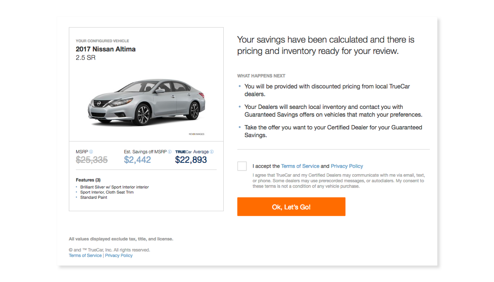
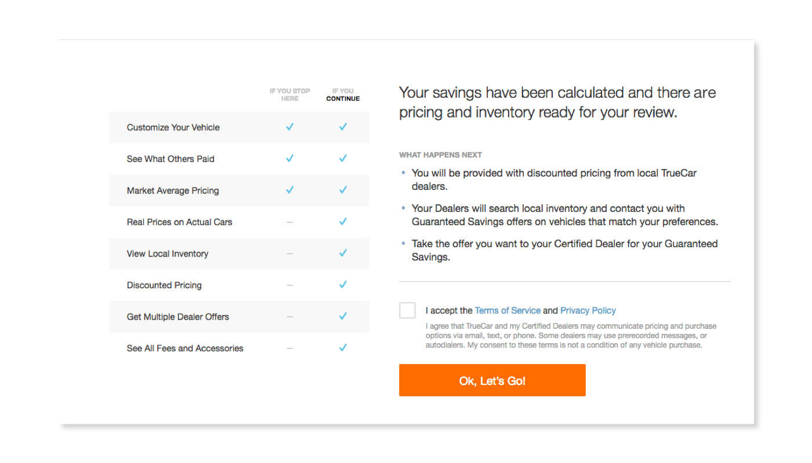

When applied to the right spot (at the right time) even minor changes can have a huge impact on conversion—good or bad.
The first step in our testing process was to dive into the analytics and identify an opportunity. A so-called "friction point."
When we looked at visitor data, we identified that a lot users were dropping off when they reached a specific "next steps" confirmation page.
This page required a user to review their chosen car, click a terms and conditions agreement radio button and then a CTA.

Prior to this screen, the users had already entered their name, email address, chosen a password and entered their address and phone number. So, in theory, there should have been very little attrition on this page as it wasn't asking the users to input any information. All we were asking was that they click a button.
The fallout represented a significant opportunity to increase throughput of the entire experience.

The next step was to run an A/B test of the current control page versus this new challenger redesign. To speed up the development process, we used Optimizely to make the changes to the page.
This test showed immediate improvement in favor of the new design and message. We were able to determine with 99% statistical significance that we had improved the conversion rate by over 7%.